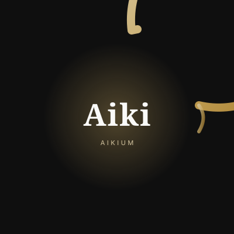
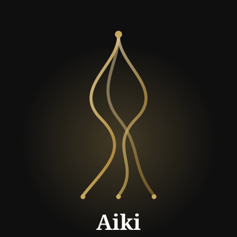
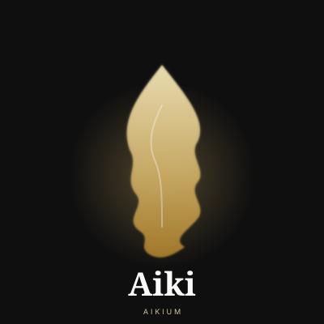
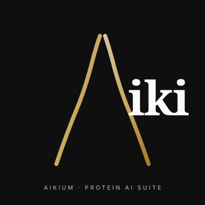
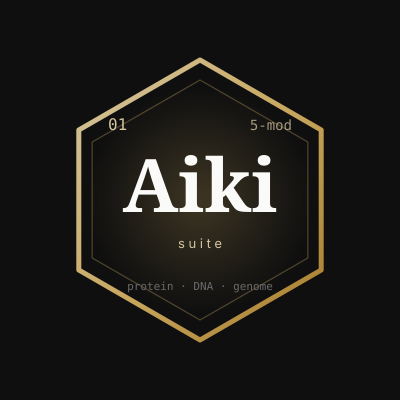
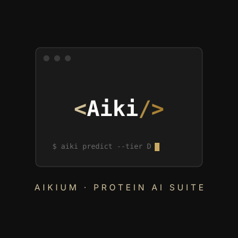
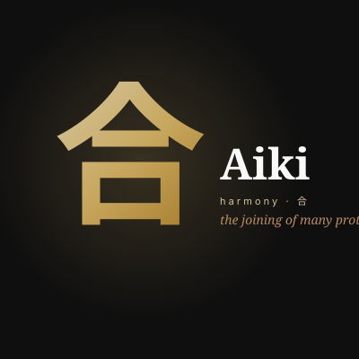
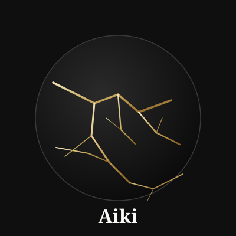
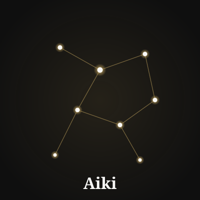
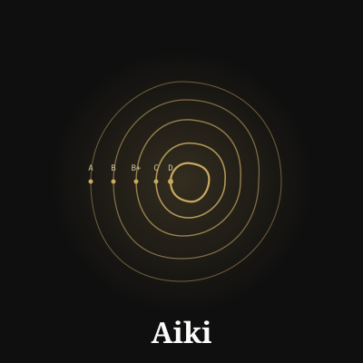

Ten concept directions. Set A stays inside the Aikium brand (gold + charcoal + flame + Playfair). Set B departs, informed by the competitor landscape (Chai, Boltz, DeepMind, Xaira, Nabla, Peptone).
Each card is a working SVG — right-click → Save Image As → drop into Figma / hand to a designer. Illustrative concepts that need raster rendering (B2 calligraphy, B3 kintsugi texture) have prompts in prompts.md for Midjourney / DALL-E / Imagen.
Gold gradient, deep charcoal, Playfair Display wordmark, silent flame pulse. Evolution of the current logo system, not a pivot.

Single brushstroke ring (zen enso, in the same spirit as "aiki" means harmony). Open gap invites per-tool suffixes (-XP, -Fold, -Bind).

Protein / nucleic-acid / genome filaments twist into the wordmark. Literalizes "multimodal fusion." Per-tool, one filament glows brighter.

The dashboard's pulsing flame reborn as a teardrop whose indented profile suggests amino-acid side chains. Direct lineage from current UI.

The "A" of Aiki as a simplified α-helix. Immediate "protein AI" read. Readable at favicon size. Most on-the-nose of Set A — useful for cold visitors.

Hexagonal element-like cell containing the wordmark. Supports infinite suite expansion: each tool = new tile variant with its own subscript.
Competitor territory: blue/white minimalism (Chai, Peptone, Xaira), abstract geometric marks (DeepMind), clean sans-serif logotypes. Under-used: warm palettes, craft motifs, non-Western references, distinctive typography. These five lean into those gaps.

Terminal-window aesthetic. Tells bioinformaticians "we ship code, not slideware." Zero overlap with any polished Silicon-Valley competitor.

Single Japanese kanji (合, "union / harmony") in a single bold gold stroke. Honors the Aiki etymology. No Western bio-AI brand has ideographic identity.

Gold-veined repair pattern on an obsidian disc. Narrative: fragmented bio-databases, Aikium stitches the seams. Brand-consistent, story-rich, unused.

Sparse graph of luminous nodes. Simultaneously suggests molecular bonds, neural networks, star charts. Each node can light up per-tool.

Concentric rings mapping to the paper's deployment ladder (A→B→B+→C→D). The logo is the science's central argument.
If I had to pick two to push to a designer: A1 (Enso) and B3 (Kintsugi). Both uniquely Aikium, both carry a story out loud, stylistic cousins — one family, two executions.
For higher-fidelity renders of the illustrative concepts (A3 flame, B2 brushstroke kanji, B3 kintsugi texture), see prompts.md — Midjourney / DALL-E / Imagen prompts with brand-specific keywords.